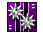
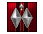
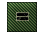

帝國軍階
原子帝國軍階有別於一般國家政府單位軍隊的階級制度，是以其轄下戰士的直屬精銳數量判定，綜合戰力經驗值則影響排行名次。
直屬精銳數量增加減少將直接影響到軍階高低而有所升降，而經驗值則概括了獎勵成就、勳章任務及特殊競賽加總而定。
Unlike ordinary government rankings, AToMic Imperial Force judges by the number of elite players directly in your team,
and comprehensive combat capability experience affects your ranking.
Increase and decrease in the number of your elite players will also directly impact your rank level, and reward achievements,
medals and special task contest completion will in turn become your experience.
軍階 |
標誌 |
直屬精銳數 |
帝國戰神 |
100 |
|
五星上將 |
70 |
|
四星上將 |
60 |
|
三星上將 |
50 |
|
中將 |
40 |
|
少將 |
30 |
|
上校 |
25 |
|
中校 |
 | 20 |
少校 |
15 |
|
上尉 |
10 |
|
中尉 |
 | 8 |
少尉 |
7 |
|
一等士官長 |
6 |
|
二等士官長 |
5 |
|
三等士官長 |
4 |
|
上士 |
3 |
|
中士 |
2 |
|
下士 |
1 |
|
上等兵 |
0 (加入一年以上) |
|
一等兵 |
 | 0 (加入半年以上) |
二等兵 |
0 (加入不足半年) |